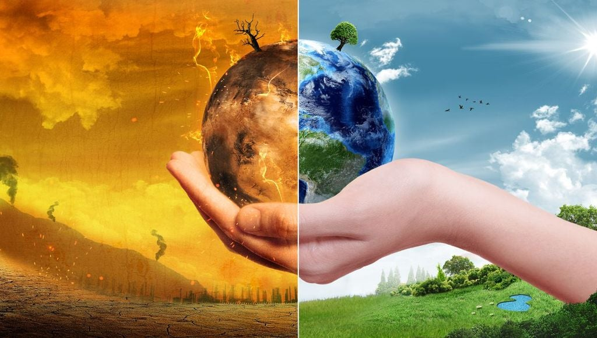

hola mundo!
¿Qué es el calentamiento global y cuáles son las causas?
El calentamiento global resulta del aumento del efecto invernadero, un proceso en el que la radiación térmica emitida por la Tierra queda atrapada en la atmósfera debido a los gases con ese efecto (GEI). Su presencia es natural y necesaria para mantener la temperatura del planeta en unos valores habitables.
Los glaciares se derriten a un ritmo nunca visto anteriormente, el nivel del mar aumenta debido al deshielo, las selvas se secan y la fauna y la flora luchan para sobrevivir en un escenario de cambios vertiginosos y complejos que a menudo impactan gravemente en la biodiversidad. Un aumento general de las temperaturas, fenómenos meteorológicos extremos, olas de calor e inundaciones, falta de cosechas, migrantes climáticos y un largo etcétera de consecuencias que ponen al cambio climático en primera línea de la agenda global por sus efectos a nivel mundial. La evidencia científica declara que la actividad industrial humana ha causado la mayor parte del calentamiento global del siglo pasado mediante la emisión de gases de efecto invernadero, que retienen el calor y cuyos niveles son cada vez más altos.
De hecho, por primera vez desde que se tienen registros, las conclusiones de un reciente estudio publicado el pasado marzo han puesto en jaque las estimaciones de evolución climática al revelar que la capacidad de la selva más grande del mundo de absorber carbono de la atmósfera se ha reducido hasta tal punto que ya podría estar liberando más carbono del que almacena.
A las consecuencias que generan estos gases lo llamamos calentamiento global, pero este fenómeno en realidad está provocando una serie de cambios en los patrones meteorológicos de la Tierra a largo plazo que varían según el lugar. Conforme la Tierra gira cada día, este nuevo calor gira a su vez, recogiendo la humedad de los océanos, aumentando aquí y asentándose allá, y cambiando en definitiva el ritmo del clima al que todos los seres vivos nos hemos acostumbrado.
El efecto invernadero
El “efecto invernadero” es el calentamiento que se produce cuando ciertos gases de la atmósfera de la Tierra retienen el calor
. Estos gases dejan pasar la luz pero mantienen el calor como las paredes de cristal de un invernadero.
En primer lugar, la luz solar brilla en la superficie terrestre, donde es absorbida y, a continuación, vuelve a la atmósfera
en forma de calor. En la atmósfera, los gases de invernadero retienen parte de este calor y el resto se escapa al espacio. Cuantos más gases de invernadero, más calor es retenido.
Los niveles atmosféricos de dióxido de carbono (CO2), el gas de efecto invernadero más peligroso y prevalente, son los más altos jamás registrados y no paran de crecer. Los niveles de gases de efecto invernadero están ahora tan altos principalmente porque los seres humanos los han liberado al aire al quemar combustibles fósiles. Los gases absorben la energía solar y mantienen el calor cerca de la superficie de la Tierra, en lugar de dejarlo escapar al espacio. Esta captura de calor se conoce como efecto invernadero.
Los otros gases de efecto invernadero son: metano (CH4), óxido nitroso (N2O) y los gases industriales, entre los que destacan los gases fluorados como los hidrofluorocarbonos, los perfluorocarbonos, los clorofluorocarbonos, el hexafluoruro de azufre (SF6) y el trifluoruro de nitrógeno (NF3).
Los científicos conocen el efecto invernadero desde 1824, cuando Joseph Fourier calculó que la Tierra sería más fría si no hubiera atmósfera. Este efecto invernadero es lo que hace que el clima en la Tierra sea apto para la vida. Sin él, la superficie de la Tierra sería unos 60 grados Fahrenheit más fría. En 1895, el químico suizo Svante Arrhenius descubrió que los humanos podrían aumentar el efecto invernadero produciendo dióxido de carbono, un gas de invernadero. Inició 100 años de investigación climática que nos ha proporcionado una sofisticada comprensión del calentamiento global.
Los niveles de gases de efecto invernadero (GEI) han aumentado y descendido durante la historia de la Tierra pero han sido bastante constantes durante los últimos miles de años. Las temperaturas medias globales se han mantenido bastante constantes también durante este periodo de tiempo hasta hace poco. A través de la combustión de combustibles fósiles y otras emisiones de GEI, los humanos están aumentando el efecto invernadero y calentando la Tierra.
Los científicos a menudo utilizan el término cambio climático en lugar de calentamiento global. Esto es porque, dado que la temperatura media de la Tierra aumenta, los vientos y las corrientes oceánicas mueven el calor alrededor del globo de modo que pueden enfriar algunas zonas, calentar otras y cambiar la cantidad de lluvia y de nieve que cae. Como resultado, el clima cambia de manera diferente en diferentes áreas.
¿Por qué es preocupante el calentamiento global?
El rápido aumento de los gases de invernadero es un problema porque está cambiando el clima tan rápido que algunos seres vivos no pueden adaptarse. Igualmente, un clima nuevo y más impredecible impone desafíos únicos para todo tipo de vida y del que los científicos ya han derivado diversos puntos de no retorno en el planeta.
Un estudio publicado en diciembre de 2022, aseguró que el calentamiento global podría contribuir a generar tsunamis en el Ártico. El calentamiento global impacta en el Ártico con un aumento de temperatura de las aguas del océano y una disminución de los espesores de los glaciares. Ambos procesos dan lugar a un escenario idóneo para la formación de deslizamientos submarinos con potencial tsunamigénico.